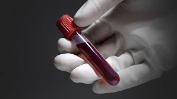
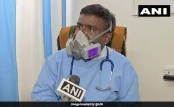

we are best medical in the family and health
The hospital you trust to care
for those you love
We serve acute-care hospitals, post-acute care facilities, community health centers and other healthcare settings nationwide. We offer travel ...We're a leading provider of workforce solutions in the healthcare industry. Together, we share a passion for meaningful work and for helping others. We believe ...
Medical Solutions provides staffing services to hospitals, clinics, and long-term care facilities. Acquired by. Centerbridge Partners Logo.
We offer day one medical, dental and vision, 401(k) with immediate enrollment available and company match after six months/500 hours of service, unlimited loyalty and referral bonuses, free EAP, and a variety of voluntary benefits, including long-term .
272
well set rooms
10
medicine hall
ok
operational theater
74
branches
How it work
person licensed to practice medicine, as a physician, surgeon, dentist, or veterinarian · 2. a person who has been awarded a doctor's degree
Aspirant
savage clicking paitent with doctor repestive mattersetscope
doctor select the text with surgery
satisfaction
surgey can be done doctor without any tension and good with respect

world doctor
doctor done their jobd,patient parys the doctor.
laboratary analysis
heat of surgery
reports

Sampletext

Sampletext
Sampletext
A leading blood test laboratory in India, Dr Lal PathLabs offers diagnostic services & wide range of diagnostic tests. Book test online for home collection.Doctor Lab is a Device Trademark filed on 30 October 2021 with Application_ID
Questions
How i sleep in pregancy?
What food to be eat?
Should i have a medicine?
OUR TEAM
Messy
General dentist
Krishnaveni
General dentist
veera
Orthodontist

ramchandray
Pedratic dentist

Ram
nurologitic

Braham
General dentist
-Messy
-Sree
-Rama
-Krishna
phonenumber:-
001-234-5678
001-987-7654
121 rock star street,21 Avenure,
new York,Ny-9211
dual adds can be fre pais by own change get
into hosiptal eith cleaned manner.
THE END